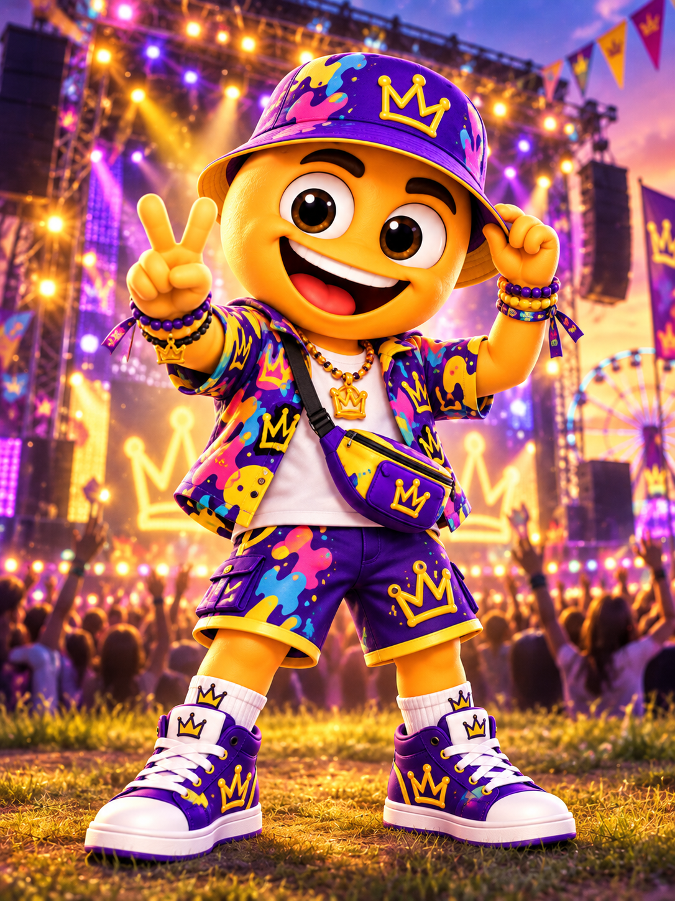
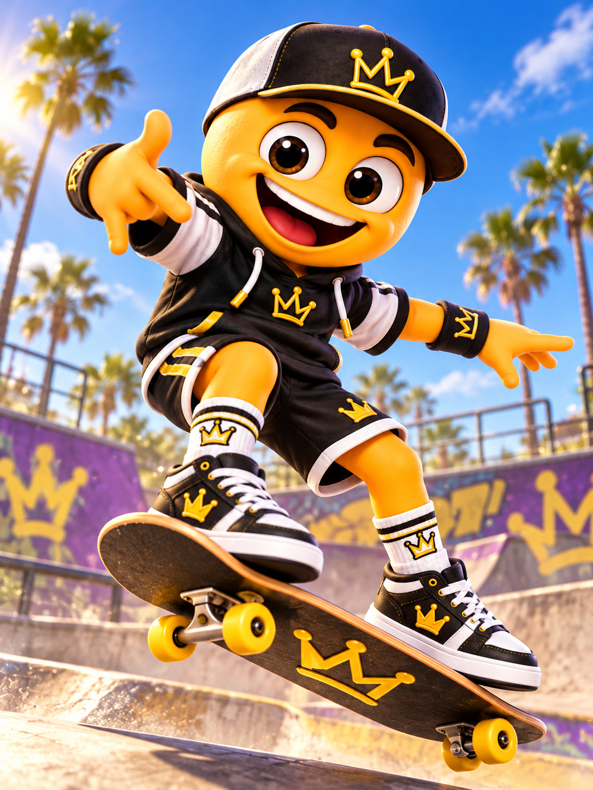
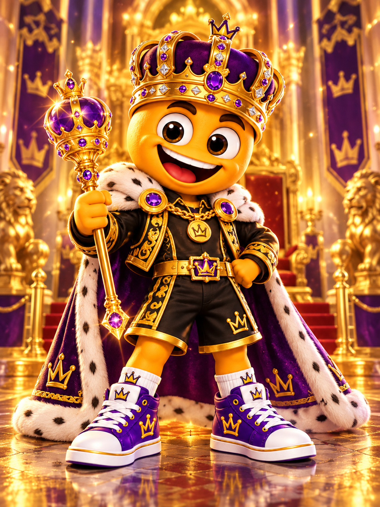

F01 · Alap
fiu/alap.png
1086 × 1448 px · 2,197,642 byte
RGB · nincs alfa; beépített háttér
F02 · Bulis
fiu/buli.png
1086 × 1448 px · 2,447,749 byte
RGB · nincs alfa; beépített háttér
F03 · Fesztiválos

fiu/fesztival.png
1086 × 1448 px · 2,519,677 byte
RGB · nincs alfa; beépített háttér
F04 · Gördeszkás

fiu/sport.png
1086 × 1448 px · 2,266,420 byte
RGB · nincs alfa; beépített háttér
F05 · Üzleti
fiu/uzleti.png
1086 × 1448 px · 2,308,797 byte
RGB · nincs alfa; beépített háttér
F06 · Uralkodói

fiu/legendas.png
1086 × 1448 px · 2,559,613 byte
RGB · nincs alfa; beépített háttér